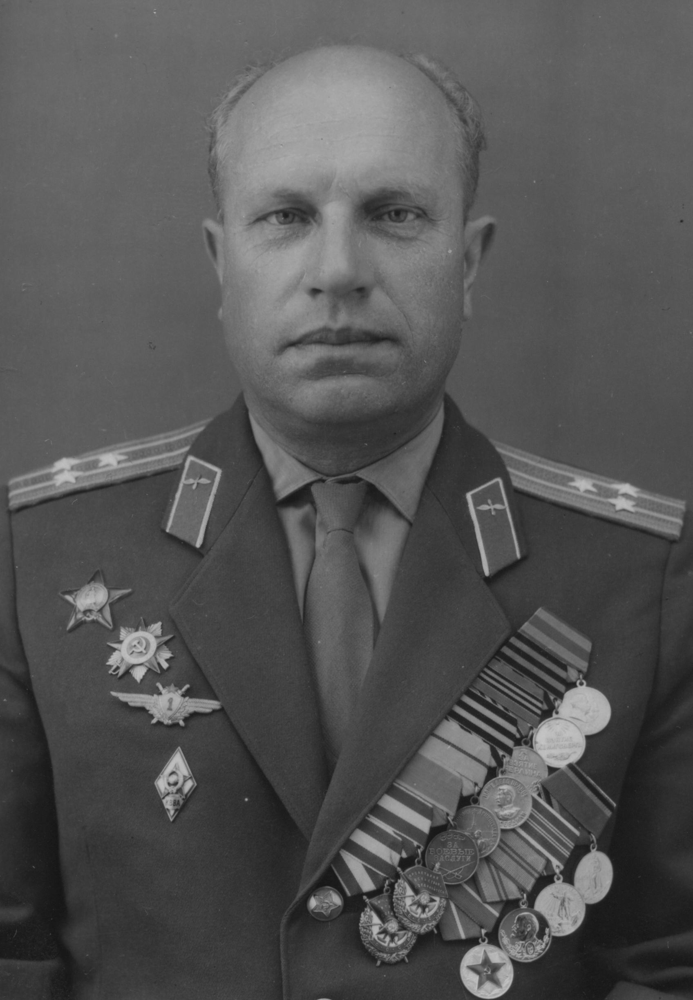

1966-12-20: Формирование полка
110-й военно-транспортный авиационный полк сформирован
110-й втап был сформирован согласно директиве Генерального штаба ВС СССР от 21 апреля 1966 года. Формирование части закончилось в ноябре 1966 года в посёлке Кречевицы Новгородской области.
День части был определён 20 декабря.
Сформировал войсковую часть первый командир полковник Иванов Владимир Тихонович.
Основой формирования явились специалисты частей дальней авиации, частей военно-транспортной авиации, выпускники военно-технических авиационных училищ.
Владимир Тихонович командовал частью с 07.06.1966 по 03.09.1968